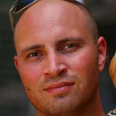

TACC Visualization Laboratory
Powering discoveries that change the world
Texas Advanced Computing Center
https://www.tacc.utexas.edu/About Us
What is TACC?
The Texas Advanced Computing Center (TACC) at The University of Texas at Austin is one of the leading advanced computing centers in the United States. The center's mission is to enable discoveries that advance science and society through the application of advanced computing technologies.
What is a Vislab?
The TACC Visualization Laboratory (Vislab), located in POB 2.404a, houses advanced display systems that compliment the world-class research being performed on our high performance computing systems. These visualization resources help advance scientific research and understanding of large datasets. The Vislab also serves as a research hub for human-computer interaction, tiled display software development, and visualization consulting.
Systems
Stallion
- 328 Megapixel Tiled Display System
- 80 30" 4MP Dell Monitors
- 40 NVidia GTX 680 Graphics Cards
- 20 Dell Precision T7600 Workstations
Lasso
- 12 MegaPixel Multi-touch Display Wall
- Supports 32 Simultaneous Touch Points
- Dual-booted With Windows 8 And CentOS 6.3
Bronco
- Sony 9M Pixel Projection System
- 20' x 11', 4096 x 2160 Resolution Display
- Ideal For Ultra-High-Resolution Presentations
- Dual-booted With Windows 7 And CentOS 6.3
Mustang and Silver
- Stereoscopic 3D Visualization Systems
- NVIDIA Quadro 6000 with 6GB Texture Memory
- 55" Samsung D7000 LED 1080P Displays
- Dual-booted With Windows 7 And CentOS 6.3
HorseShoes
- Four High-End Dual-Monitor Workstations
- Ideal For Use In Graphics Production, Visualization, And Video Editing
- Cross Platform Support
Saddle
- Collabration Room
- Full HD Projector with 16' x 9' Display
- Offers 1080p Conferencing Capabilities
Staff
-
Kelly Gaither
Director of Visualization -
Paul Navratil
 Manager of ScalableVis Technologies
Manager of ScalableVis Technologies
-
Luis Revilla
Manager of VisualizationInterfaces & Applications
-
Heri Nieto
Research Engineer -
Rob Turknett
Arts & HumanitiesCoordinator -
Greg Johnson
Research Engineer -
Greg Abram
Research Scientist
-
Greg Foss
Research Engineer -
Anne Bowen
Research Engineer -
Aaron Knoll
 Research Associate -
Carson Brownlee
Research Associate -
Don Koehler
System Administrator
Student Proctors
-
Joao Barbosa
Computer Science -
Divya Thakur
Aerospace Engineering -
Andrew Solis
Computer Science -
Michelle Huddleston
Mechanical Engineering
Become A User
Requesting A New TACC Account
- Connect to the TACC User Portal.
- Select the "Register for a TACC account" link.
- Read the new user information and click "Continue".
- Read and accept the TACC Usage Policy.
- Complete all required information and submit the form.
- A confirmation page will be displayed.
- You will be notified once your request has been processed.
- Login to the portal to activate your account.